国宝10周年 八雲立つ雲海松江城を見に行きました。
2025/08/17
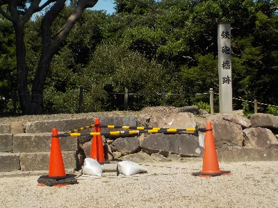
一部立ち入り禁止になっていました。崩れそうなのかな？歴史を感じますね。
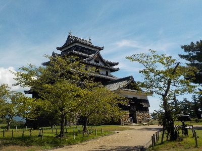
今日は天気が良く写真を撮るのにピッタリでした。
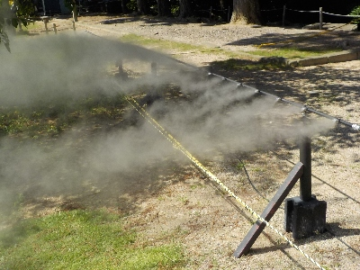
雲海イベントの時間になると、ホースからミストが大量放出です。
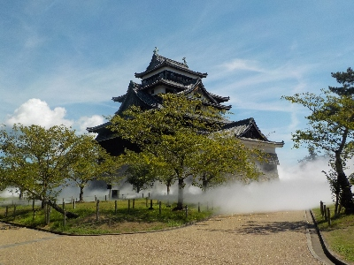
八雲立つ雲海松江城完成です。
近くにいた人の立ち話によると、今日は風がありミストが流れてしまとのことでした。
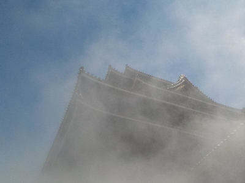
ミストの中に入ってみました。足元は真っ白で何も見えなくてちょっと怖かったです。
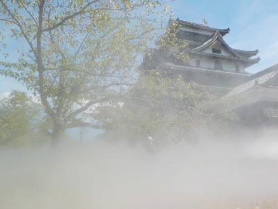
なかなか楽しい夏のイベントでした。小さい子がいたらとっても喜びそうだけど、あんまり子供がいなくて残念な感じもしました。
朝だったので少なかったかもしれません。
松江城に紅葉を見に行きました。
2022/11/12
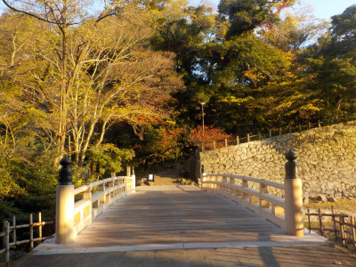
松江観光協会によると、松江城が紅葉スポットとなっていたので見に行きました。
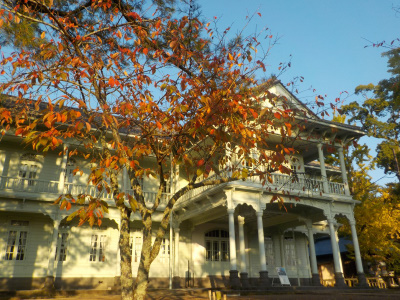
桜の木が多いのでこんな感じの紅葉が多いです。
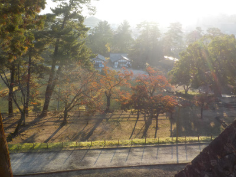
天気が良く、朝日が眩しかったです。
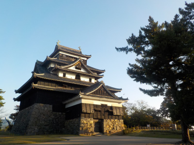
国宝松江城はカッコいいですね。
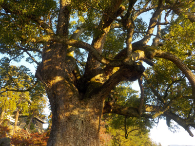
巨木もあります。
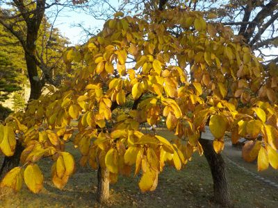
なんじゃもんじゃの木の紅葉です。これが見れたのが一番良かったかな。
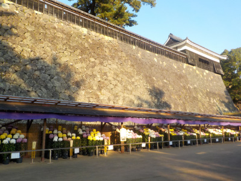
菊花展が開催されていました。こうやって見るとお城の壁って高いですね。立派だ。
松江城で桜の花見です。
2018/03/30
夕方寒かったです。
寒さに負けず宴会してる人達はすごいな。（少なかったですけど。）
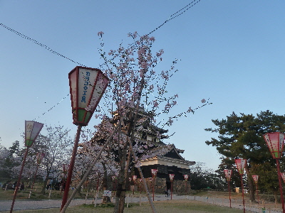
お城の下の桜は大きいですが、ここの桜はまだ小さいですね。
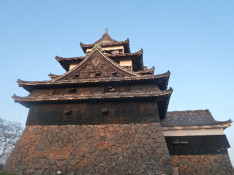
松江城かっこいいです。
桜ないほうがいいと思いました。
いろんなお城に桜ってあるけど、必要かな？
松江城は亀がいっぱいです。
2016/10/10
松江城のお堀に亀がいっぱい泳いでました。
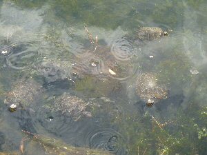
だれか餌をあげてるのかな？
不自然なくらい多かったです。
今日はマスクdeお見合いイベントをやっていたので、城の上の方は賑わってたけど、下の方は空いていました。
松江城でお花見をしました。
2012/04/08
今日は一畑グループ創立100周年記念で電車が無料だったので、電車に乗って松江市に行きました。
一畑グループさんありがとうございます。
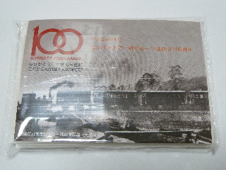
駅で記念のティッシュをもらいました。
で、松江城でお花見です。
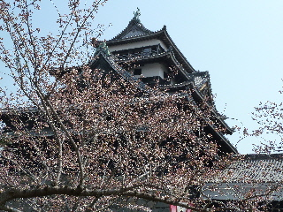
でも残念ながら、あんまり咲いていませんでした。
お城は高い所に建っているので、風が強くて寒かったです。
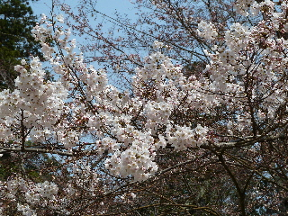
お城の下の方には、少し綺麗に咲いている木がありました。
桜は綺麗でいいですね。
松江城では六子さんの歌も聞けました。
そのあと松江歴史館に行ったら、名刺入れをいただきました。
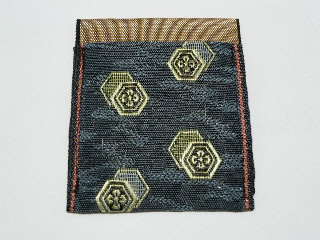
カッコイイです。竹内畳店さんありがとうございました。
一畑電車は満員で立ちっぱなしだったし、松江城付近をぐるっと散歩したりで疲れたんですが、楽しい休日でした。
松江城のご縁茶会
2007/10/27
毎年、松江城大茶会は2日間やっているんですが、その日の予定や天気なんかを考えるとなかなか行けないです。
でも今年は10月の土日は毎週茶会をやっているので行きやすくていいです。
松江開府400年祭って事でやっているんでしょうが、出来たら毎年10月の土日は茶会をやって欲しいですね。
1席800円で、お茶に感心のない人にはなんとも微妙な値段だと思うんですが、日常とちょっと違う体験が出来るのはなかなかいいものだと思いました。作法が分からなくても、周りの人を見てれば何とかなりますし、観光イベントだと思うと気軽に行けていいです。
今日は素心流でお茶をいただいて、すすり茶ってゆうのをたぶん（？）初めて飲んだんですが、苦味のない濃いお茶がとても美味しかったです。
大茶会以外でいただける場所を知らないですが、機会があったらまたいただきたいって思いました。
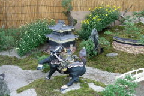
今日は松江菊花展もやってました。
松江城「第56回 松江菊花展」
2006/10/29
松江城山公園馬溜広場で菊花展がやってました。菊が展示してあるのと、ちょこっと菊の販売をしてるだけで、静かでのんびりとしたイベントでした。
馬溜広場をほぼいっぱい使ってますので、菊の展示数はそこそこありました。よく見かけるタイプの大輪の菊や、盆栽タイプの菊が綺麗に咲いてました。
お客さんが多くなかったのと、今日は天気が良かったので、のんびり菊が鑑賞できて良かったです。
松江城って大きくて立派な城ですし、お庭も綺麗なのでもっと観光客の人や地元の人が散歩しててもいいと思うんですけど、あんまり混んでないですよね。ちょっともったいないです。
綺麗ですね。
5月上旬
なんじゃもんじゃの花見
「なんじゃもんじゃ」は山陰地方のテレビや新聞によく登場するので、名前を知ってる方が多いと思います。
正式には「ひとつばたご」ってもくせい科の木なんですが、ゴールデンウィークごろに、細長くてまっ白な花を沢山咲かせます。モクセイ科なので、ほんのりいい香りもします。
松江城は緑が沢山あるんですが、すこし離れた所からみると「なんじゃもんじゃ」の木がある所だけ明るい緑になってますので、よく目立ちます。
新緑の葉の上に、いっせいに白い花を咲かせますので木全体が明るく、光ったようなパールグリーンになりとても綺麗です。
あんまり綺麗な緑なので、最初に見たときはビックリしました。まだ見たことがない人は是非行ってみてください。